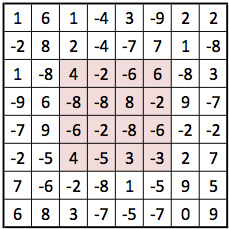

Enoncé
Vous devez réaliser un code qui met en place une analyse de données issues de capteurs. Ces données forment une matrice carrée de nombres entiers. Dans le reste de l'énoncé, on nommera p la dimension de la matrice et on suppose que p est un multiple de 4.
On ne s'intéresse en fait qu'au quart des données qui sont au centre (dans les deux dimensions) correspondant à la sous-matrice de dimension p / 2 située au centre.

Sur cet échantillon de données, on souhaite connaitre les valeurs minimale, maximale, la médiane et le mode. Pour la médiane, comme le nombre de données est pair, on prendra la moyenne entre la donnée de rang n/2 et celle de rang (n/2)+1 (où n représente le nombre de données dans la sous-matrice). Le mode d'un ensemble de données est la valeur qui est présente le plus grand nombre de fois dans cet ensemble. Si plusieurs valeurs sont des candidates valides suivant cette définition, on prendra la plus petite de celles-ci.
Format des données
Entrée
Ligne 1 : la dimension p de la matrice.
Ligne 2 à p+1 : p nombres entiers séparés par des espaces correspondant aux lignes de la matrice.
Sortie
4 nombres correspondant au minimum, au maximum, à la médiane et au mode de la sous-matrice située au centre. Le maximum, le minimum et le mode sont des entiers, pour la médiane on affichera le résultat avec un chiffre après la virgule (même si le résultat est entier) arrondi à l'inférieur en utilisant le séparateur "." (par exemple -1.5 ou 3.0) .